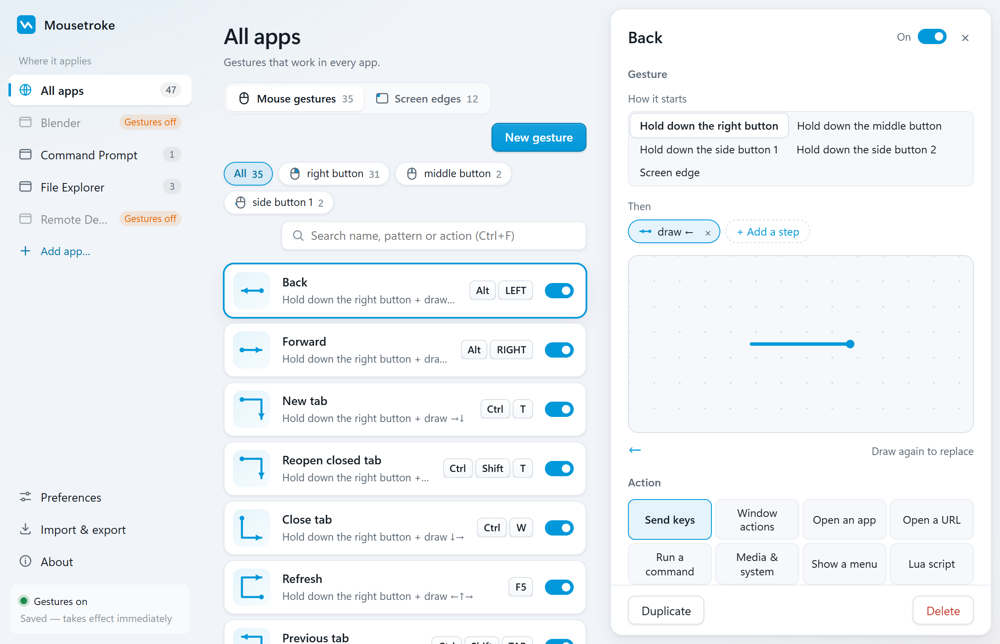

Mousetroke · Tool selection guide
Looking for a MouseInc alternative for Windows 11?
Decide whether you want focused mouse gestures or a broader app combining screenshots, OCR and desktop utilities.
Compare the facts
Unverified means the official sources checked did not establish the fact; it does not mean unsupported.
| Feature | Mousetroke | MouseInc | Aitiy |
|---|---|---|---|
| Platforms | Windows 10 1809+/11 x64; macOS 11+ (Apple silicon & Intel, beta)[5] | Unverified | Windows 10/11 x64; macOS 11+, Intel and Apple silicon[3][4] |
| License & price | Free, MIT open source[5] | Unverified | Free for personal use (as of 2026-10-21); source and commercial-use license unverified[3] |
| Maintenance / latest release | v0.2.1 · 2026-10-20[7] | Unverified | Official site displays v1.0.13; release date unverified[3] |
| System-wide or browser-only | System-wide; per-app rules and exclusions[6] | Unverified | Global/per-app mouse gestures, hotkeys, screenshots and OCR[3][4] |
| Scripting & actions | Lua; 8 action types: send keys, window actions, open an app, open a URL, run a command, media & system, show a menu, Lua script[6] | Unverified | Lua action engine with editor completion[3][4] |
| Screen corners & edges | Screen corner and edge actions[6] | Unverified | Screen edges and hot corners[4] |
| Touchpad & touchscreen | Mouse-button strokes; native multi-finger touchpad/touchscreen gestures unverified[5] | Unverified | Unverified |
| Installation | Windows: 13.2 MB portable exe; Mac: 8.1 MB DMG[6] | Unverified | Windows: extract and run exe; Mac: extract app and move to Applications; configurable portable mode[4] |
Choose for your needs
Choose Mousetroke if…
You want inspectable MIT source, a portable Windows exe, Mac beta, and direct gesture and screen-edge settings.
Choose MouseInc / Aitiy if…
Your existing MouseInc setup works reliably, or you want to evaluate Aitiy's screenshots, OCR, Lua actions and desktop tools.
Differences in daily use
The former MouseInc product URL pointed to its settings-interface repository when checked, and that repository is archived. Archiving a settings interface does not establish the core product's final version, license or end-of-maintenance date, so those remain unverified.
MouseInc users can also evaluate Aitiy. Its site confirms Windows and macOS, free personal use, Lua, screenshots and OCR. A formal successor relationship was not verified in the official material read here, and configuration compatibility is not promised. Mousetroke provides MIT-licensed source for users focused on gestures, screen edges and per-app rules.

Frequently asked questions
What is a good MouseInc alternative for Windows 11?
Consider Mousetroke if you mainly use a mouse and want system-wide gestures, screen corners and inspectable MIT source. For deep macro editing, native multi-finger input or browser-only use, follow the choices on this page.
Is Mousetroke free and open source?
Yes. It uses the MIT license, with no ads, account or telemetry. It checks GitHub for updates once a day by default; turn that off in Preferences if you prefer.
What does the Mac beta need on first open?
Drag the app from the DMG to Applications. The beta is self-signed and not notarized. If blocked, follow the README: System Settings → Privacy & Security → Open Anyway, then grant Accessibility in setup. Enable Input Monitoring only if setup asks for it.
Start with one everyday gesture
Go back, close a tab, manage a window or trigger an action from a screen corner. About 19 MB resident on Windows and 13 MB on Mac.
The Windows exe is not code-signed yet, so SmartScreen may warn on first run: More info → Run anyway. The Mac beta is self-signed and not notarized: drag to Applications, use Privacy & Security → Open Anyway if blocked, then grant Accessibility in setup.
Sources
Last checked · Official sources only; unverified is not a claim of no support.